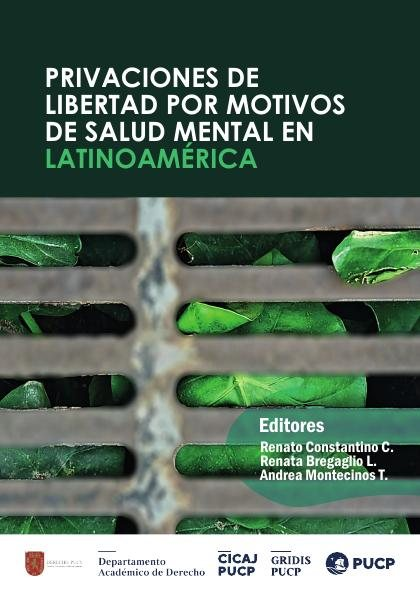
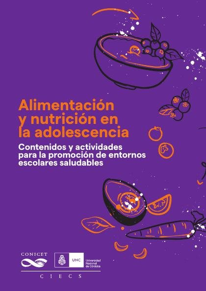
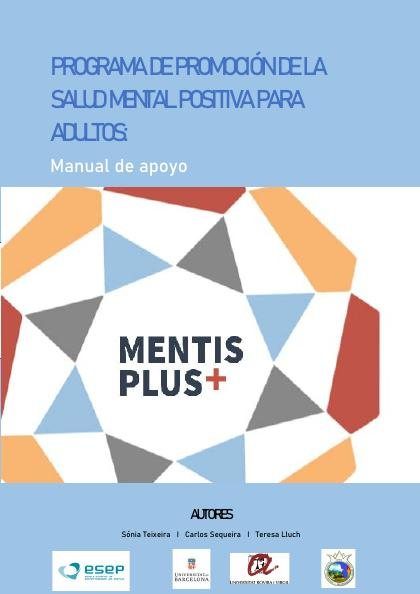
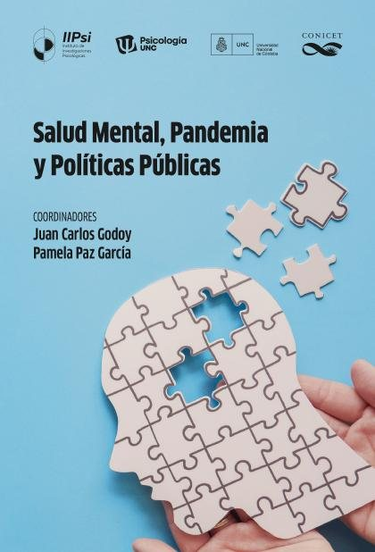
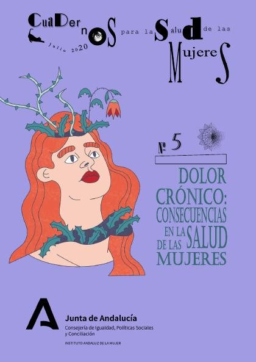

Libros de psicología de la salud
Libros de psicología de la salud en español: 71 libros completos para leer gratis aquí mismo y 4 fichas de títulos actuales.
Cuidarnos ante la adversidad: salud mental y resiliencia en contextos diversosFlores-Buils, Raquel
Cuidarnos ante la adversidad: salud mental y resiliencia en contextos diversosFlores-Buils, RaquelEstrés crónico, salud mental y perfiles emocionales en adolescentes : evidencia aplicada e insumos para políticas públicas en el Uruguay post COVID-19Brunet, Nicolás; Tórtora, Giuliana; Piñeiro, Mercedes; Sánchez, Fernanda; Agüero Michelin Salomón, Patricia; Borgarello, Luciana; Funcasta Duce, Lorena; Gotero, Agustina; Krul, Nadia
Estrés crónico, salud mental y perfiles emocionales en adolescentes : evidencia aplicada e insumos para políticas públicas en el Uruguay post COVID-19Brunet, Nicolás; Tórtora, Giuliana; Piñeiro, Mercedes; Sánchez, Fernanda; Agüero Michelin Salomón, Patricia; Borgarello, Luciana; Funcasta Duce, Lorena; Gotero, Agustina; Krul, NadiaMarco de competencias y resultados para la salud y el bienestar en la adolescencia
Marco de competencias y resultados para la salud y el bienestar en la adolescenciaNormas mundiales para mejorar la calidad de los servicios de salud adolescente
Normas mundiales para mejorar la calidad de los servicios de salud adolescenteDe la prescripción al diálogo: Manual para facilitadores/as de grupos de Gestión Colaborativa de la Medicación en salut mentalSerrano-Miguel, Mercedes; Pié Balaguer, Asunción; Martinez-Hernaez, Angel; Blanco de Tena-Dávila, Elena
De la prescripción al diálogo: Manual para facilitadores/as de grupos de Gestión Colaborativa de la Medicación en salut mentalSerrano-Miguel, Mercedes; Pié Balaguer, Asunción; Martinez-Hernaez, Angel; Blanco de Tena-Dávila, ElenaElegí mi vida : una mirada feminista sobre salud mental y experiencias de embarazos no deseados/abortos voluntarios clandestinizados 2009-2019Santarelli, Natalia
Elegí mi vida : una mirada feminista sobre salud mental y experiencias de embarazos no deseados/abortos voluntarios clandestinizados 2009-2019Santarelli, NataliaEquidad en materia de salud para las personas con discapacidad: Guía de Acción
Equidad en materia de salud para las personas con discapacidad: Guía de AcciónEscalas mundiales de medición del desarrollo en la primera infancia (GSED-SF) v. 1.0: Formulario corto de entrevista al cuidador. Guía de los ítems
Escalas mundiales de medición del desarrollo en la primera infancia (GSED-SF) v. 1.0: Formulario corto de entrevista al cuidador. Guía de los ítemsEstereotipos sobre el envejecimiento en una muestra universitaria de Ciencias de la SaludAlarcón Aguilar, Ana H.; Rojano-Hidalgo, Mario; Calero Galindo, Luis
Estereotipos sobre el envejecimiento en una muestra universitaria de Ciencias de la SaludAlarcón Aguilar, Ana H.; Rojano-Hidalgo, Mario; Calero Galindo, LuisGuía para un cuidado democrático y colectivo. Salud mental y redes de apoyoPié Balaguer, Asunción; Salas Soneira, Miguel; Alegre Agís, Elisa; Mora, Enrico; López Gómez, Daniel; Muñoz García, Araceli; Costa, Leticia del Carmen; Aparicio, Vanesa del Carmen; Correa-Urquiza Vida
Guía para un cuidado democrático y colectivo. Salud mental y redes de apoyoPié Balaguer, Asunción; Salas Soneira, Miguel; Alegre Agís, Elisa; Mora, Enrico; López Gómez, Daniel; Muñoz García, Araceli; Costa, Leticia del Carmen; Aparicio, Vanesa del Carmen; Correa-Urquiza VidaPrograma Bienestar. Acompañando a familias de adolescentes con problemas de salud mentalAntolín Suárez, Lucía; Rodríguez Meirinhos, Ana; Nieto-Casado, Francisco Javier; Jiménez García, Lucía; Baena Medina, Magdalena Sofía; Barroso Díaz, Sira; García Pineda, Olalla
Programa Bienestar. Acompañando a familias de adolescentes con problemas de salud mentalAntolín Suárez, Lucía; Rodríguez Meirinhos, Ana; Nieto-Casado, Francisco Javier; Jiménez García, Lucía; Baena Medina, Magdalena Sofía; Barroso Díaz, Sira; García Pineda, OlallaSalud Laboral-Consecuencias del estrés laboral y estrategias de IntervenciónGonzález-Anta, Baltasar
Salud Laboral-Consecuencias del estrés laboral y estrategias de IntervenciónGonzález-Anta, BaltasarCrecer a cielo abierto: salud colectiva y psicosocial de infantes, escolares y adolescentes de familias recicladorasSoliz Torres, María Fernanda; Caldas Hidalgo, Carol Vanessa; Enríquez Cárdenas, Doménica; Monge Chiguano, Melissa Carolina; Ortiz Jaramillo, Paola
Crecer a cielo abierto: salud colectiva y psicosocial de infantes, escolares y adolescentes de familias recicladorasSoliz Torres, María Fernanda; Caldas Hidalgo, Carol Vanessa; Enríquez Cárdenas, Doménica; Monge Chiguano, Melissa Carolina; Ortiz Jaramillo, PaolaLa salud mental en el Perú: progresos hacia la desinstitucionalizaciónPonce de León, José Carlos; Erausquin Ruiz, Maria Grazia
La salud mental en el Perú: progresos hacia la desinstitucionalizaciónPonce de León, José Carlos; Erausquin Ruiz, Maria GraziaLa salud mental es cosa de niños, niñas y adolescentes. Barómetro de Opinión de la Infancia y Adolescencia 2023-2024Ramos Valverde, Pilar; Luna Rivas, Sara; Rivera de los Santos, Francisco José; Moreno Rodríguez, María del Carmen; Moreno Maldonado, Concepción; Leal López, Eva; Majón Valpuesta, Dolores; Villafuerte 
La salud mental es cosa de niños, niñas y adolescentes. Barómetro de Opinión de la Infancia y Adolescencia 2023-2024Ramos Valverde, Pilar; Luna Rivas, Sara; Rivera de los Santos, Francisco José; Moreno Rodríguez, María del Carmen; Moreno Maldonado, Concepción; Leal López, Eva; Majón Valpuesta, Dolores; Villafuerte Los profesionales de salud eficientes en el Siglo XXI: las competencias necesarias, para un aprendizaje continuado y activo en profesiones de saludGandini, Bernardo José
Los profesionales de salud eficientes en el Siglo XXI: las competencias necesarias, para un aprendizaje continuado y activo en profesiones de saludGandini, Bernardo JoséPrivaciones de libertad por razones de salud mental en LatinoaméricaConstantino, Renato; Bregaglio, Renata; Montecinos, Andrea
Privaciones de libertad por razones de salud mental en LatinoaméricaConstantino, Renato; Bregaglio, Renata; Montecinos, Andrea
Atlas de salud mental de las Américas 2020
Atlas de salud mental de las Américas 2020Década del Envejecimiento Saludable: Informe de referencia
Década del Envejecimiento Saludable: Informe de referenciaInforme mundial sobre la salud mental: Transformar la salud mental para todos
Informe mundial sobre la salud mental: Transformar la salud mental para todosUna nueva agenda para la salud mental en las Américas. Informe de la Comisión de Alto Nivel sobre Salud Mental y COVID-19 de la Organización Panamericana de la Salud
Una nueva agenda para la salud mental en las Américas. Informe de la Comisión de Alto Nivel sobre Salud Mental y COVID-19 de la Organización Panamericana de la SaludConfinamiento y salud mental de los mayores: ¿qué hemos aprendido de la pandemia de covid‑19?
Confinamiento y salud mental de los mayores: ¿qué hemos aprendido de la pandemia de covid‑19?Directrices de la OMS sobre intervenciones de autocuidado para la salud y el bienestar
Directrices de la OMS sobre intervenciones de autocuidado para la salud y el bienestarManual para el entrenamiento y apoyo de cuidadores de personas con demencia (iSupport)Organización Mundial de la Salud
Manual para el entrenamiento y apoyo de cuidadores de personas con demencia (iSupport)Organización Mundial de la SaludServicios de salud mental en momentos de crisis: promover los enfoques centrados en las personas y basados en los derechos
Servicios de salud mental en momentos de crisis: promover los enfoques centrados en las personas y basados en los derechosAlimentación y nutrición en la adolescencia: contenidos y actividades para la promoción de entornos escolares saludablesRomán, María Dolores; Moos, Ana C; Berra, Silvina
Alimentación y nutrición en la adolescencia: contenidos y actividades para la promoción de entornos escolares saludablesRomán, María Dolores; Moos, Ana C; Berra, Silvina
Desafíos y prioridades : la salud mental de adolescentes y jóvenes en el PerúChau, Cecilia
Desafíos y prioridades : la salud mental de adolescentes y jóvenes en el PerúChau, CeciliaEl cuidado cariñoso y sensible para el desarrollo en la primera infancia. Marco para ayudar a los niños y niñas a sobrevivir y prosperar a fin de transformar la salud y el potencial humano
El cuidado cariñoso y sensible para el desarrollo en la primera infancia. Marco para ayudar a los niños y niñas a sobrevivir y prosperar a fin de transformar la salud y el potencial humanoEnvejecimiento, actividad física y desarrollo emocionalOlga Bruna, Isabel Carrera Blancafort, Mercè Gimeno-Santos y otros
Envejecimiento, actividad física y desarrollo emocionalOlga Bruna, Isabel Carrera Blancafort, Mercè Gimeno-Santos y otrosPrograma de promoción de la Salud Mental Positiva para adultos (Mentis Plus+): manual de apoyoTeixeira, Sonia; Sequeira, Carlos; Lluch Canut, Ma. Teresa
Programa de promoción de la Salud Mental Positiva para adultos (Mentis Plus+): manual de apoyoTeixeira, Sonia; Sequeira, Carlos; Lluch Canut, Ma. Teresa
Salud Mental, Pandemia y Políticas Públicas. Sobre la propuesta de este libro colectivoGodoy, Juan Carlos (Comp.); Paz García, A. Pamela (Comp.); López Steinmetz, Lorena Cecilia; Abigail Leyes, Candela; Dutto Florio, María Agustina; Belaus, Anabel; Ortiz, Maria Victoria; Mola, Débora Je
Salud Mental, Pandemia y Políticas Públicas. Sobre la propuesta de este libro colectivoGodoy, Juan Carlos (Comp.); Paz García, A. Pamela (Comp.); López Steinmetz, Lorena Cecilia; Abigail Leyes, Candela; Dutto Florio, María Agustina; Belaus, Anabel; Ortiz, Maria Victoria; Mola, Débora Je
Soltar amarras. Una introducción a la salud mental colectivaMartínez Hernáez, Ángel; Pié Balaguer, Asunción; Correa-Urquiza, Martín
Soltar amarras. Una introducción a la salud mental colectivaMartínez Hernáez, Ángel; Pié Balaguer, Asunción; Correa-Urquiza, MartínDirectrices de la OMS para el manejo de los problemas de salud física en adultos con trastornos mentales graves
Directrices de la OMS para el manejo de los problemas de salud física en adultos con trastornos mentales gravesDolor crónico: consecuencias en la salud de las mujeresGil García, Eugenia; Cáceres Matos, Rocío
Dolor crónico: consecuencias en la salud de las mujeresGil García, Eugenia; Cáceres Matos, Rocío
Intervenciones recomendadas en salud mental y apoyo psicosocial durante la pandemia de COVID-19, junio de 2020
Intervenciones recomendadas en salud mental y apoyo psicosocial durante la pandemia de COVID-19, junio de 2020Salud mental y psicologíaGómez Vargas, Maricelly
Salud mental y psicologíaGómez Vargas, Maricelly¿De cuál salud mental hablamos en tiempos del Covid-19 y cómo promoverla?Gómez Vargas, Maricelly
¿De cuál salud mental hablamos en tiempos del Covid-19 y cómo promoverla?Gómez Vargas, MaricellyManual del cuidador familiar. (Es)tar con la demencia: Programa de capacitación para cuidadores familiares de personas con demencia que residen en el domicilioLia Sousa; Carlos Sequeira; Carme Ferré Grau
Manual del cuidador familiar. (Es)tar con la demencia: Programa de capacitación para cuidadores familiares de personas con demencia que residen en el domicilioLia Sousa; Carlos Sequeira; Carme Ferré GrauPolíticas intersectoriales para el abordaje integral en salud mental: La complejidad de la acción conjuntaBurijovich, Jacinta
Políticas intersectoriales para el abordaje integral en salud mental: La complejidad de la acción conjuntaBurijovich, JacintaSalud mental y derecho. Derechos Sociales e Intersectorialidad.Rossetti, Andrés; Monasterolo, Natalia; Yoma, Solana; Arizo, Alejandra; Ase, Iván; Buhlman, Soledad; Burijovich, Jacinta; Caminada Rossetti, María Paz; Cesano, José Daniel; del Carpio, Sol Victoria; D
Salud mental y derecho. Derechos Sociales e Intersectorialidad.Rossetti, Andrés; Monasterolo, Natalia; Yoma, Solana; Arizo, Alejandra; Ase, Iván; Buhlman, Soledad; Burijovich, Jacinta; Caminada Rossetti, María Paz; Cesano, José Daniel; del Carpio, Sol Victoria; DAvances en PAFD: Salud, bienestar, ocio y rendimiento desde una aproximación multidisciplinar. Libro de Actas del XV Congreso Andaluz y II Luso-Andaluz de Psicología de la Actividad Física y el Deporte, Granada, 14 a 17 de febrero de 2017Godoy Izquierdo, Débora; Bohórquez Gómez-Millán, María Rocío; Caracuel Tubío, José Carlos; Arbinaga Ibarzábal, Félix
Avances en PAFD: Salud, bienestar, ocio y rendimiento desde una aproximación multidisciplinar. Libro de Actas del XV Congreso Andaluz y II Luso-Andaluz de Psicología de la Actividad Física y el Deporte, Granada, 14 a 17 de febrero de 2017Godoy Izquierdo, Débora; Bohórquez Gómez-Millán, María Rocío; Caracuel Tubío, José Carlos; Arbinaga Ibarzábal, FélixSalud mental comunitaria : una forma de trabajo basada en el reconocimientoVelázquez, Tesania
Salud mental comunitaria : una forma de trabajo basada en el reconocimientoVelázquez, TesaniaLos adolescentes españoles: estilos de vida, salud, ajuste psicológico y relaciones en sus contextos de desarrollo. Resultados del Estudio HBSC-2014 en EspañaMoreno Rodríguez, María del Carmen; Ramos Valverde, Pilar; Rivera de los Santos, Francisco José; Jiménez Iglesias, Antonia María; García Moya, Irene; Sánchez Queija, María Inmaculada; Moreno Maldonado
Los adolescentes españoles: estilos de vida, salud, ajuste psicológico y relaciones en sus contextos de desarrollo. Resultados del Estudio HBSC-2014 en EspañaMoreno Rodríguez, María del Carmen; Ramos Valverde, Pilar; Rivera de los Santos, Francisco José; Jiménez Iglesias, Antonia María; García Moya, Irene; Sánchez Queija, María Inmaculada; Moreno MaldonadoRecursos de salud positiva: estudio exploratorio con grupos del ámbito escolar de PamplonaSáenz Mendía, Raquel; Gabari Gambarte, María Inés; García García, José María
Recursos de salud positiva: estudio exploratorio con grupos del ámbito escolar de PamplonaSáenz Mendía, Raquel; Gabari Gambarte, María Inés; García García, José MaríaSalud mental y derecho. Reflexiones en torno a un nuevo paradigma.Rossetti, Andrés; Monasterolo, Natalia; Alem de Muttoni, Lucia; Ase, Iván; Burijovich, Jacinta; Caminada Rossetti, María Paz; Fernandez, Natalia; Lopez, Rosa; Yoma, Solana
Salud mental y derecho. Reflexiones en torno a un nuevo paradigma.Rossetti, Andrés; Monasterolo, Natalia; Alem de Muttoni, Lucia; Ase, Iván; Burijovich, Jacinta; Caminada Rossetti, María Paz; Fernandez, Natalia; Lopez, Rosa; Yoma, SolanaSalud mental y colectiva 1: Participación, inclusión y ciudadanía, septiembre 2015Pié Balaguer, Asunción; Correa-Urquiza, Martín; Martinez-Hernaez, Angel
Salud mental y colectiva 1: Participación, inclusión y ciudadanía, septiembre 2015Pié Balaguer, Asunción; Correa-Urquiza, Martín; Martinez-Hernaez, AngelActivos para el desarrollo positivo y la salud mental en la adolescenciaOliva Delgado, Alfredo; Reina Flores, María del Carmen; Hernando Gómez, Ángel; Antolín Suárez, Lucía; Pertegal Vega, Miguel Ángel; Parra Jiménez, Águeda; Ríos Bermúdez, Moisés; Estévez Campos, Rosa Mª
Activos para el desarrollo positivo y la salud mental en la adolescenciaOliva Delgado, Alfredo; Reina Flores, María del Carmen; Hernando Gómez, Ángel; Antolín Suárez, Lucía; Pertegal Vega, Miguel Ángel; Parra Jiménez, Águeda; Ríos Bermúdez, Moisés; Estévez Campos, Rosa MªDesarrollo adolescente y salud en España: Resumen del estudio Health Behaviour in School Aged Children (HBSC-2006)Ramos Valverde, Pilar; Moreno Rodríguez, María del Carmen; Rivera de los Santos, Francisco José; Muñoz Tinoco, María Victoria; Sánchez Queija, María Inmaculada; Granado Alcón, María del Carmen; Jiméne
Desarrollo adolescente y salud en España: Resumen del estudio Health Behaviour in School Aged Children (HBSC-2006)Ramos Valverde, Pilar; Moreno Rodríguez, María del Carmen; Rivera de los Santos, Francisco José; Muñoz Tinoco, María Victoria; Sánchez Queija, María Inmaculada; Granado Alcón, María del Carmen; JiméneInstrumentos para la evaluación de la salud mental y el desarrollo positivo adolescente y los activos que lo promuevenOliva Delgado, Alfredo; Antolín Suárez, Lucía; Pertegal Vega, Miguel Ángel; Ríos Bermúdez, Moisés; Parra Jiménez, Águeda; Hernando Gómez, Ángel; Reina Flores, María del Carmen
Instrumentos para la evaluación de la salud mental y el desarrollo positivo adolescente y los activos que lo promuevenOliva Delgado, Alfredo; Antolín Suárez, Lucía; Pertegal Vega, Miguel Ángel; Ríos Bermúdez, Moisés; Parra Jiménez, Águeda; Hernando Gómez, Ángel; Reina Flores, María del CarmenEscenarios de enfermedad, salud, muerte y vidaAnderson, Jeanine
Escenarios de enfermedad, salud, muerte y vidaAnderson, JeanineEspacio Terapéutico Reservado: Guía de Buenas Prácticas en Enfermería para la implementación en unidades de salud mentalMoreno Poyato, Antonio Rafael; El Abidi El Ghazouani, Khadija; Ibañez-Salvador, Delia; Sanchez-Balcells, Sara; Puig Llobet, Montserrat; Lluch Canut, Ma. Teresa
Espacio Terapéutico Reservado: Guía de Buenas Prácticas en Enfermería para la implementación en unidades de salud mentalMoreno Poyato, Antonio Rafael; El Abidi El Ghazouani, Khadija; Ibañez-Salvador, Delia; Sanchez-Balcells, Sara; Puig Llobet, Montserrat; Lluch Canut, Ma. TeresaCiudadanía como salud mental: Hacia una redefinición de los objetivos en salud mental. Guía para la implementación de intervenciones de concienciación para profesionales de la salud mental basadas en el modelo de CiudadaníaGonzalez-Mañas, Diana; Eiroá Orosa, Francisco José
Ciudadanía como salud mental: Hacia una redefinición de los objetivos en salud mental. Guía para la implementación de intervenciones de concienciación para profesionales de la salud mental basadas en el modelo de CiudadaníaGonzalez-Mañas, Diana; Eiroá Orosa, Francisco JoséAcción socioeducativa y salud mental, febrero 2023Pié Balaguer, Asunción; Salas Soneira, Miguel
Acción socioeducativa y salud mental, febrero 2023Pié Balaguer, Asunción; Salas Soneira, MiguelPrograma de terapia asistida con animales para la promoción de la salud mental positivaBalaguer, Judith; Moreno Arroyo, M. Carmen; Lluch Canut, Ma. Teresa; Ristol Ubach, Francesc; Puig Llobet, Montserrat
Programa de terapia asistida con animales para la promoción de la salud mental positivaBalaguer, Judith; Moreno Arroyo, M. Carmen; Lluch Canut, Ma. Teresa; Ristol Ubach, Francesc; Puig Llobet, MontserratPromoción de la salud en la infancia y la adolescencia, febrero 2020Casañas, Rocio
Promoción de la salud en la infancia y la adolescencia, febrero 2020Casañas, RocioEn tiempos de petróleo: salud psicosocial en niños, niñas y adolescentes de las comunidades en las que operó TexacoSoliz Torres, María Fernanda; Cepeda Vélez, Pamela; Maldonado Campos, Adolfo
En tiempos de petróleo: salud psicosocial en niños, niñas y adolescentes de las comunidades en las que operó TexacoSoliz Torres, María Fernanda; Cepeda Vélez, Pamela; Maldonado Campos, AdolfoFundamentos de Psicología de la SaludFlores Robaina, Noelia Emma
Fundamentos de Psicología de la SaludFlores Robaina, Noelia EmmaEl derecho a la salud mental : viejos problemas, nuevos desafíosArnao, Magdalena; Szlejcher, Anna; Bocco, Graciela; Fernández, Natalia; Caminada, María Paz; Buhlman, Soledad; Burijovich, Jacinta; Monasterolo, Natalia; Carpio, Sol del; Chena, Marina; Ase, Iván; Yom
El derecho a la salud mental : viejos problemas, nuevos desafíosArnao, Magdalena; Szlejcher, Anna; Bocco, Graciela; Fernández, Natalia; Caminada, María Paz; Buhlman, Soledad; Burijovich, Jacinta; Monasterolo, Natalia; Carpio, Sol del; Chena, Marina; Ase, Iván; YomConstruyendo estrategias de promoción de la salud mental y prevención de los trastornos mentales con la comunidad de Malvinas ArgentinasVillacé, María Belén; Lucchesse, Marcela Susana; Acosta, Laura Débora; Cometto, María Cristina; Iosa, Emilio; Ribeti, Daniel; Burrone, María Soledad; Gómez, Patricia Fabiana; Abeldaño, Roberto Ariel;
Construyendo estrategias de promoción de la salud mental y prevención de los trastornos mentales con la comunidad de Malvinas ArgentinasVillacé, María Belén; Lucchesse, Marcela Susana; Acosta, Laura Débora; Cometto, María Cristina; Iosa, Emilio; Ribeti, Daniel; Burrone, María Soledad; Gómez, Patricia Fabiana; Abeldaño, Roberto Ariel; Cuerpo, salud y comida: aspectos socioculturales de la nutriciónFornons Fontdevila, David; Aguilar, Alicia; Vericat, Xavier; Boquera, Mònica; Romero, Eva; Milán, Sandra; Gurpegui, Izaskun; Moix, Laura Mercedes; Tidy, JuliAnne; Scapuzzi, Silvia; Ribó, Dolors; Sánch
Cuerpo, salud y comida: aspectos socioculturales de la nutriciónFornons Fontdevila, David; Aguilar, Alicia; Vericat, Xavier; Boquera, Mònica; Romero, Eva; Milán, Sandra; Gurpegui, Izaskun; Moix, Laura Mercedes; Tidy, JuliAnne; Scapuzzi, Silvia; Ribó, Dolors; SánchExperiencias y reflexiones de salud mental comunitariaFernandez, Alicia Ruth; Enders, Julio Enrique; Romero, Daniel; Alvarado, Rubén; González, Cristina
Experiencias y reflexiones de salud mental comunitariaFernandez, Alicia Ruth; Enders, Julio Enrique; Romero, Daniel; Alvarado, Rubén; González, CristinaPsicología de la salud y de la calidad de vida, septiembre 2014Ballesteros Regaña, Ana; Barriga Jiménez, Silverio; Medina Anzano, Silvia
Psicología de la salud y de la calidad de vida, septiembre 2014Ballesteros Regaña, Ana; Barriga Jiménez, Silverio; Medina Anzano, SilviaCrecimiento y desarrollo de la biología a la educación y la saludBarrón, Margarita; Arce, Sonia; Borioli, Gloria; Brandenburg, Graciela; Carbonetti, Mario Eduardo; Carbonetti, Mario Julio; Carena Bruno, María Cristina; Córdoba, Julia; Eguillor Arias, Raquel Gabriel
Crecimiento y desarrollo de la biología a la educación y la saludBarrón, Margarita; Arce, Sonia; Borioli, Gloria; Brandenburg, Graciela; Carbonetti, Mario Eduardo; Carbonetti, Mario Julio; Carena Bruno, María Cristina; Córdoba, Julia; Eguillor Arias, Raquel GabrielCuidadores hombresTorres Enamorado, Dolores; Eslava Sánchez, María; Casado Mejía, Rosa María; Ruiz Arias, Esperanza; Polvillo Avilés, María José
Cuidadores hombresTorres Enamorado, Dolores; Eslava Sánchez, María; Casado Mejía, Rosa María; Ruiz Arias, Esperanza; Polvillo Avilés, María JoséIntervención en psicología de la salud y calidad de vida, febrero 2012Hernández Encuentra, Eulàlia; Guillamon, Noemi
Intervención en psicología de la salud y calidad de vida, febrero 2012Hernández Encuentra, Eulàlia; Guillamon, NoemiDesarrollo positivo y salud mental durante la adolescencia: recursos evolutivos y estrategias de intervenciónOliva Delgado, Alfredo; Hernando, Ángel; Parra Jiménez, Águeda; Pertegal Vega, Miguel Ángel; Ríos Bermúdez, Moisés; Antolín Suárez, Lucía; González, Carolina
Desarrollo positivo y salud mental durante la adolescencia: recursos evolutivos y estrategias de intervenciónOliva Delgado, Alfredo; Hernando, Ángel; Parra Jiménez, Águeda; Pertegal Vega, Miguel Ángel; Ríos Bermúdez, Moisés; Antolín Suárez, Lucía; González, CarolinaIntervención en psicología clínica y de la salud : programa y material de prácticasBados López, Arturo; Saldaña García, Carmina; García Grau, Eugeni; Puigdollers, Elisabeth; Fusté Escolano, Adela
Intervención en psicología clínica y de la salud : programa y material de prácticasBados López, Arturo; Saldaña García, Carmina; García Grau, Eugeni; Puigdollers, Elisabeth; Fusté Escolano, AdelaEl buen trato con la infancia. ¿Cómo lo vemos?. Desde la psicología, la salud, la comunicación a la creatividad gráficaAcosta Naranjo, Enrique; Gómez de Terreros, Ignacio; Esteban Arbués, Andrés; Ruiz-de-Lacanal, María-Dolores; Blázquez-Pacheco, Diego; Hernández Rey, José Miguel
El buen trato con la infancia. ¿Cómo lo vemos?. Desde la psicología, la salud, la comunicación a la creatividad gráficaAcosta Naranjo, Enrique; Gómez de Terreros, Ignacio; Esteban Arbués, Andrés; Ruiz-de-Lacanal, María-Dolores; Blázquez-Pacheco, Diego; Hernández Rey, José MiguelEntrenamiento en habilidades sociales para los profesionales de la saludLeón Rubio, José María; Medina Anzano, Silvia; Cantero Sánchez, Francisco Javier; Gil Rodríguez, Francisco
Entrenamiento en habilidades sociales para los profesionales de la saludLeón Rubio, José María; Medina Anzano, Silvia; Cantero Sánchez, Francisco Javier; Gil Rodríguez, FranciscoIntroducción a la psicología de la salud desde un enfoque psicosocialLeón Rubio, José María
Introducción a la psicología de la salud desde un enfoque psicosocialLeón Rubio, José MaríaNueva filosofia de la naturaleza del hombre, no conocida, ni alcanzada de los grandes filosofos antiguos, la qual mejora la vida, y salud humana, con las adicciones de la segunda impressionMartínez, Martín, 1684-1734. n 86858121
Nueva filosofia de la naturaleza del hombre, no conocida, ni alcanzada de los grandes filosofos antiguos, la qual mejora la vida, y salud humana, con las adicciones de la segunda impressionMartínez, Martín, 1684-1734. n 86858121Cuando el cuerpo dice noGabor Maté
Cuando el cuerpo dice noGabor MatéSer mortalAtul Gawande
Ser mortalAtul GawandeEl mito de la normalidadGabor Maté
El mito de la normalidadGabor MatéSobre la muerte y los moribundosElisabeth Kübler-Ross
Sobre la muerte y los moribundosElisabeth Kübler-RossTemas relacionados
¿Estás eligiendo carrera?
Haz gratis el test de orientación vocacional de AURZANE: intereses, aptitudes, autoconcepto y hábitos de estudio, con informe completo.